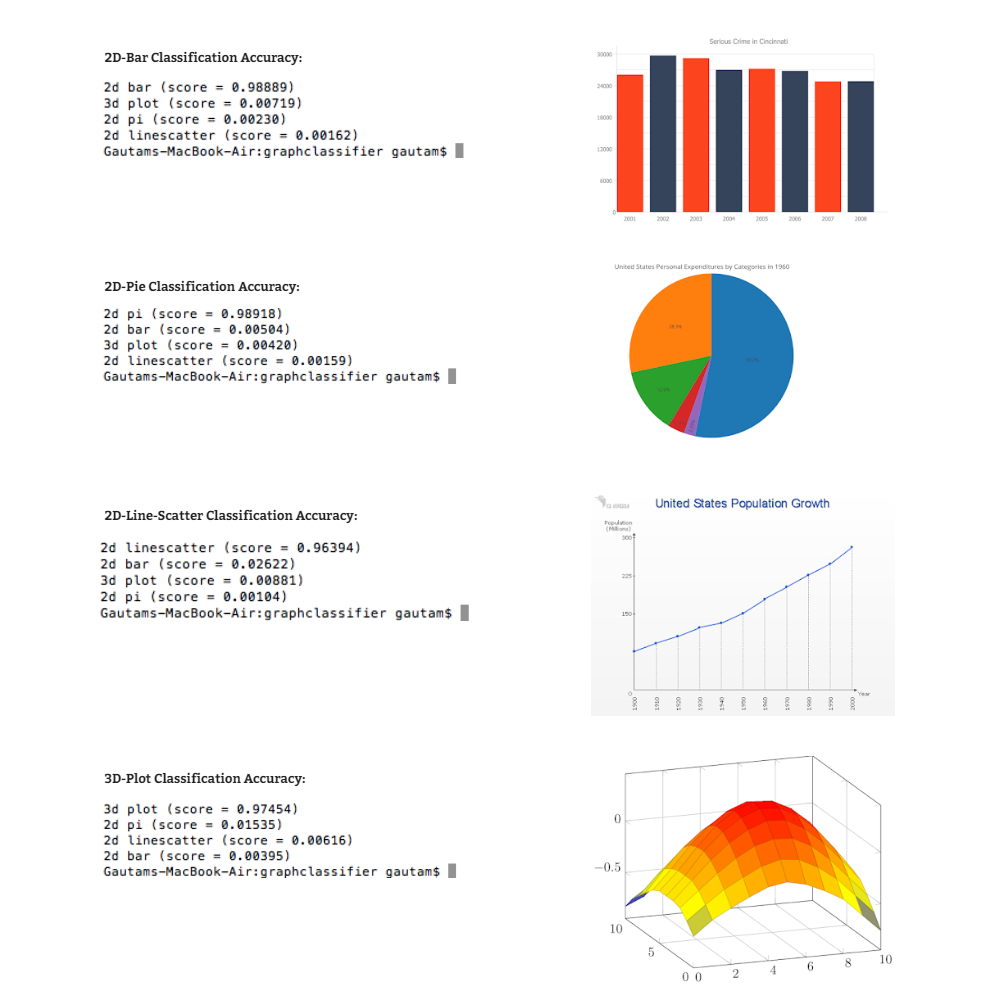

D-Grafica.
Abstract
A Data-Chart Classification, Extraction and Summarization program that uses TensorFlow, MATLAB for IP and text recognition and a pre-trained Deep Learning Convolutional Neural Network model called Inception (V3). It also helps in reconstructing them with the original data values and produce better search results. With Google Images API, we extract over 6000 visualizations, and classify them with 90% accuracy, across 12 visualization types.
How it works?
We follow a 3 step pipeline for carrying out the extensive extraction and subsequently summarization of Data charts.
Extraction Stage - For the extraction of the scientific figures from the PDF Reports, we wrote this python based script. The link to the repository that explains
this step is
here.
Classification Stage - For the classificiation of the extracted images, we used Inception V3 Model. The link to the steps are here.
Information Extraction Stage - To extract the data points and meta-text from the classified images, we used Image processing algorithms. We created a Matlab based
GUI tool for feeding the input image and automatically extract the data points depending upon the graph type. The link to the detail steps is here.
Reflections
Model Prediction Accuracy
